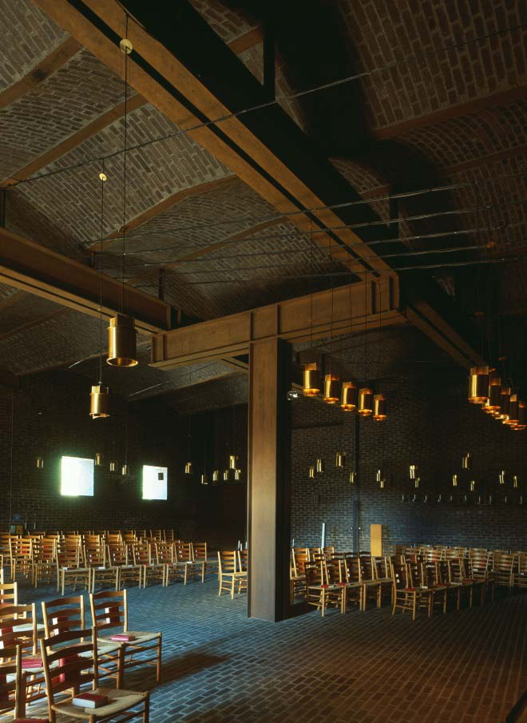
Ogni forma architettonica è pensata per un corpo in movimento. Spazio e materia non si limitano a essere percepiti: sono attraversati, vissuti, messi in relazione tra loro da chi li abita. Progettare significa orchestrare rapporti tra luce, ritmo, pieni e vuoti che si attivano lungo un percorso. Il progetto nasce da questa dinamica percettiva, dove l’esperienza precede la figura.
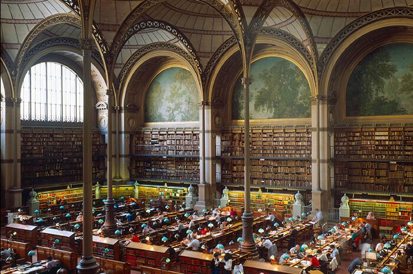
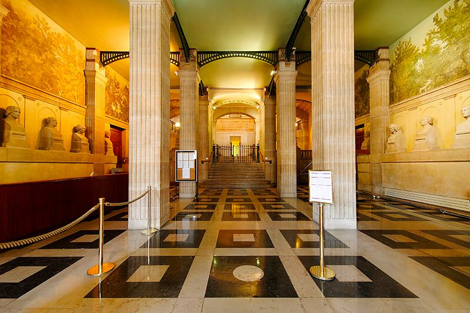
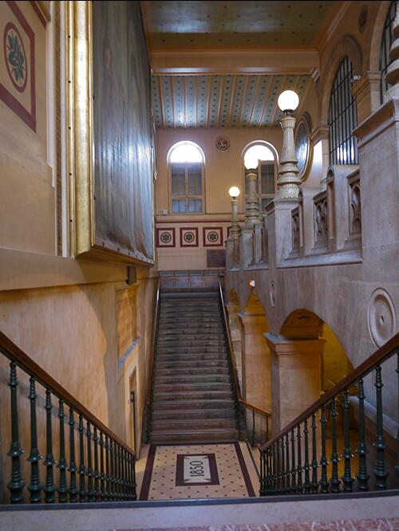
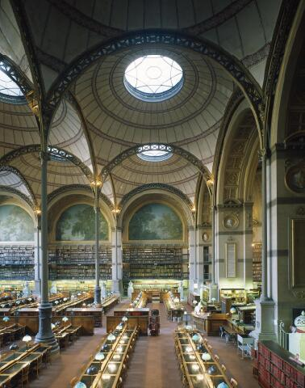
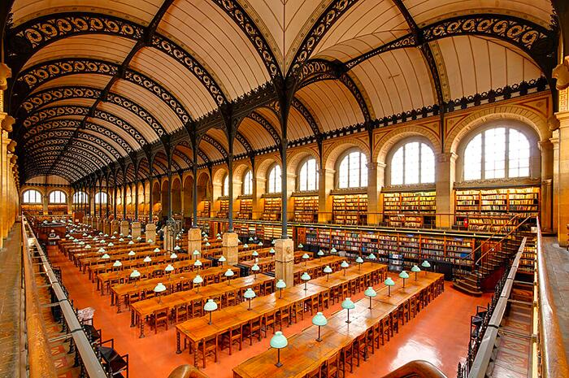
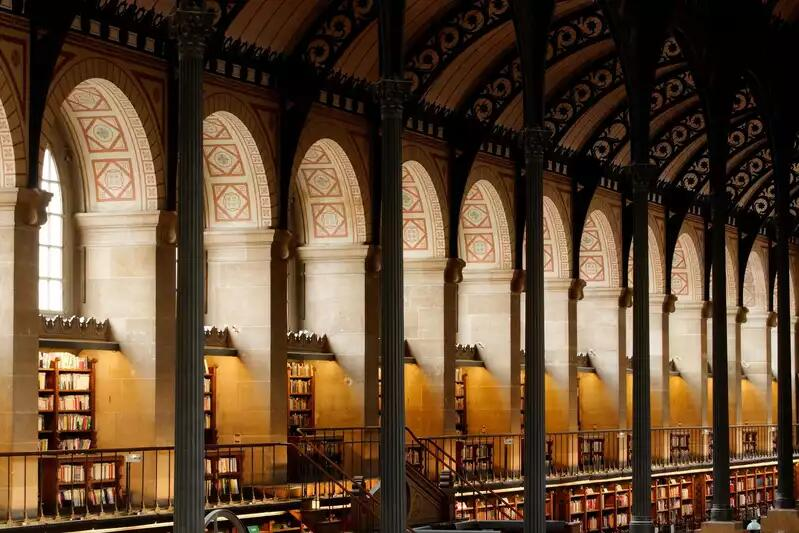
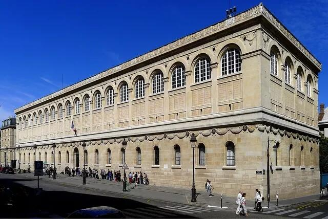
Il modello come verifica tipologica e comportamentale
La biblioteca di Labrouste è una macchina percettiva calibrata sul movimento di chi studia. L’accesso, quasi urbano, introduce a un atrio di soglia: un luogo denso, scandito dalla lista incisa degli autori in facciata e dall’inerzia pietrosa della muratura. È una compressione intenzionale che prepara l’apertura successiva. La grande sala di lettura si dispiega come un paesaggio sospeso: doppia navata, altezza misurata, volte sottili in ferro e ghisa che sostengono senza gravare, una pelle luminosa che diffonde la luce naturale in modo uniforme. Il passaggio dal pieno massivo all’ossatura metallica è un cambio di stato percettivo: il corpo avverte la perdita di peso, la vista riconosce un sistema di relazioni regolari, l’udito si assesta su un silenzio poroso.
La struttura non è esibizione tecnologica ma grammatica di comportamento: le campate organizzano orientamenti e soste, i tavoli allineano traiettorie, le finestre dànno ritmo al respiro della sala. Il ferro produce un effetto di “geometria leggera” che rende la profondità leggibile senza ostacoli. Tutto è pensato per la continuità del gesto di studio: sedere, sollevare lo sguardo, ritrovare un ordine stabile. In questo senso, natura e geometria non sono opposte: la regola modulare si mette al servizio di una fisiologia del tempo lungo, della concentrazione, dell’abitare quieto.
La biblioteca non si limita a contenere libri: costruisce la condizione per leggerli. È architettura che guida senza imporre, che trasforma il cammino in metodo. La forma appare come esito di una precisa etica della misura, dove la leggerezza è un fatto morale prima che estetico.
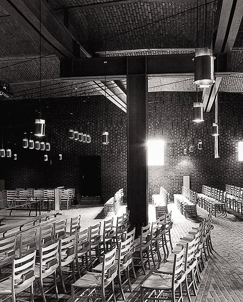
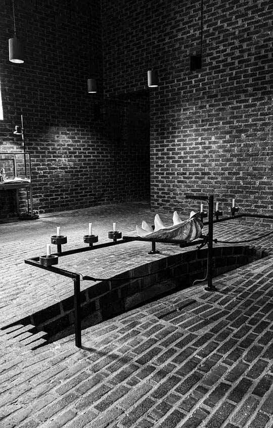
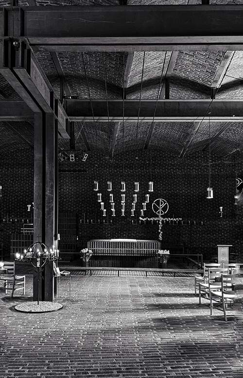
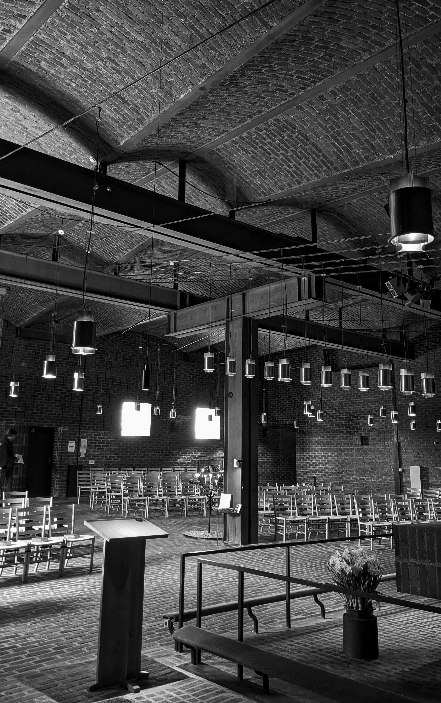
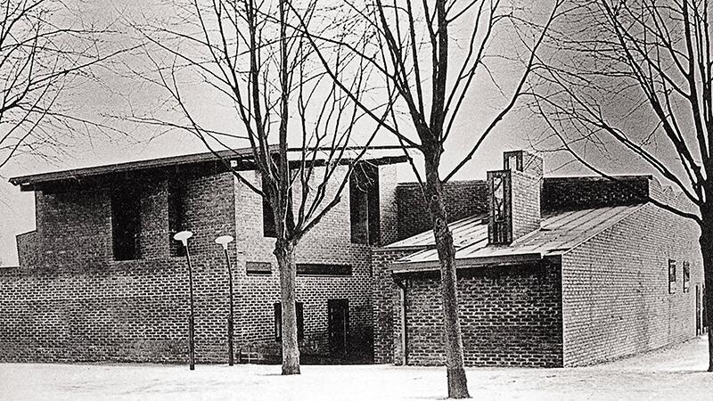
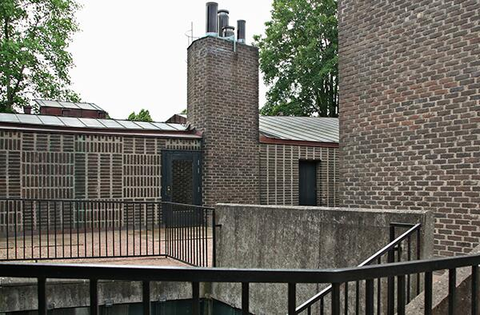
Il modello come test di materia, luce e comportamento
A Klippan, Lewerentz compone un percorso che restituisce al rito la sua misura terrestre. Il fedele non “entra” semplicemente: viene condotto da un sistema di muri che piegano, filtrano, rallentano. La quota dell’ingresso, la soglia profonda, i varchi laterali costruiscono un avvicinamento privo di scenografia ma ricco di intensità tattile. Il mattone scuro, leggermente irregolare, assorbe la luce e la restituisce come chiarore obliquo; l’aria sembra più densa, i passi più lenti. Il movimento diventa gesto meditativo.
All’interno, l’orientamento non è imposto da un asse gerarchico, ma da un campo: pedane, gradini minimi, lampade basse, sedute decentrate. La luce non proviene da un unico punto: filtra da fenditure, si posa sugli spigoli, lascia in penombra porzioni significative. È una coreografia lenta, dove geometria e materia trattengono la figura per lasciar emergere la presenza. La direzione verso l’altare si forma per attrazione, non per comando; la comunità si raccoglie in una centralità porosa, attraversata da silenzi, da respiri.
Lewerentz non cerca la monumentalità; lavora su una densità che avvicina il sacro alla vita. Ogni dettaglio – il ferro ossidato, le superfici senza finitura, le lampade come punti di gravità – partecipa alla stessa etica: nessuna retorica, solo misura. Ne risulta un’architettura che non rappresenta il rito: lo rende possibile. La forma è il comportamento stesso dello spazio, una disciplina del corpo che lo orienta verso l’ascolto. Qui natura e geometria convergono nella costruzione di una interiorità condivisa: la luce bassa, la massa, la direzione minima diventano strumenti per far accadere il tempo del raccoglimento.
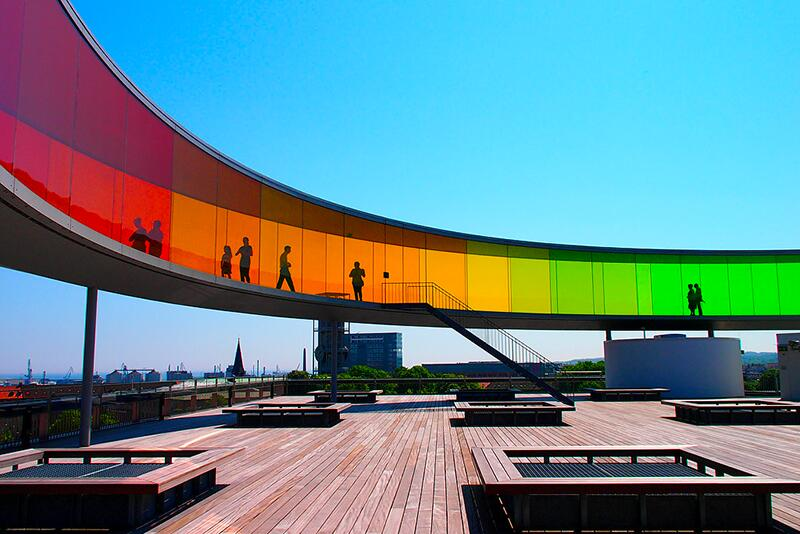
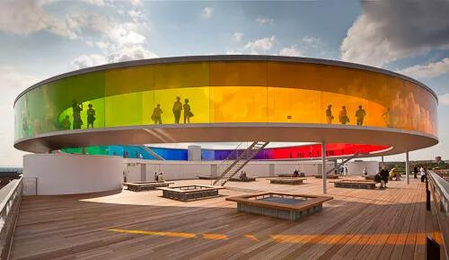
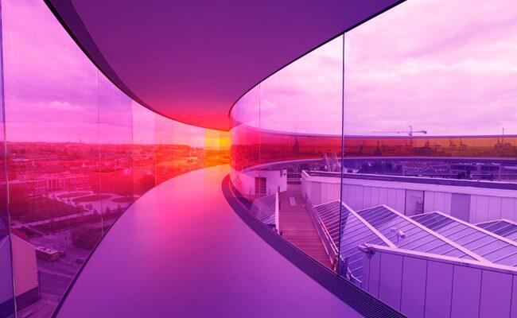
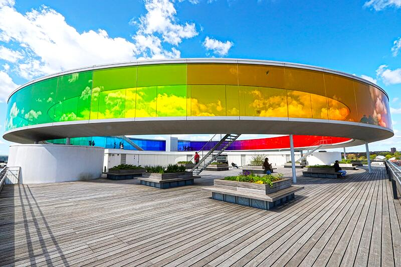
Your Rainbow Panorama è un dispositivo ambientale che fa del camminare un atto di conoscenza. L’anello vetrato, continuo e sopraelevato, ingloba la città in una sequenza cromatica che muta passo dopo passo. Non c’è un punto di vista corretto: l’orizzonte è sempre lo stesso e, insieme, sempre diverso. Il colore agisce come geometria sensibile: orienta l’attenzione, altera la distanza percepita, sposta il ritmo del respiro. Il corpo registra micro-variazioni di luce e saturazione, la memoria ricalibra il paesaggio.
Qui la forma è puro comportamento: una curva perfetta che si limita a offrire condizioni, lasciando che l’esperienza le abiti. La trasparenza colorata non aggiunge un’immagine alla città; la ri-compone in spettri successivi, rivelando ciò che lo sguardo abituale non distingue. Natura e geometria si toccano in un equilibrio inedito: la regola dell’anello – misura, continuità, isotropia – si mette al servizio dell’instabilità atmosferica, del mutare del cielo, della luce che scorre. Ne nasce una pedagogia della percezione, dove l’arte non è oggetto ma strumento per capire come vediamo.
Il percorso è circolare ma non ripetitivo: ogni giro è un’altra esperienza, perché cambiano ora, tempo meteorologico, posizione del corpo. Non c’è retorica tecnologica: c’è una lucidissima economia di mezzi al servizio di una complessità fenomenologica. L’opera mostra come un semplice protocollo spaziale possa trasformare la città in laboratorio sensoriale, restituendo all’atto di guardare una qualità attiva e consapevole. Camminare diventa il progetto stesso: la forma non illustra, produce esperienza.